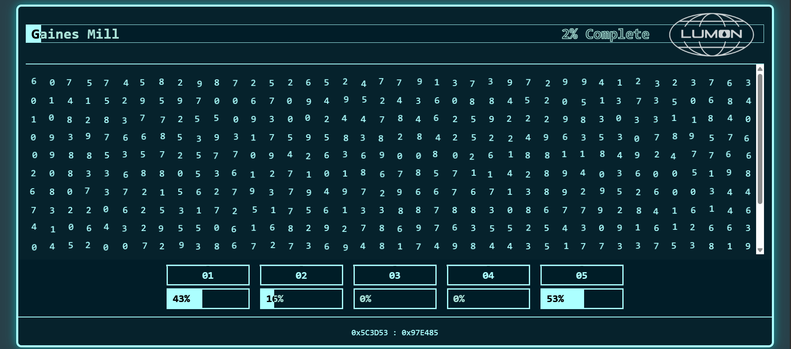
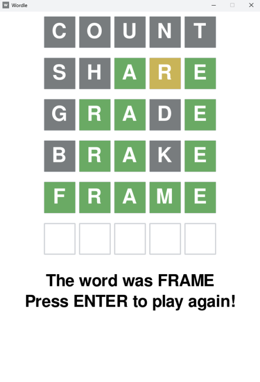

Projects

Kalman Filter Ball Tracking Simulation
MuJoCo and OpenCV ball-tracking simulation that uses a custom NumPy Kalman filter to predict motion over a 180ms latency horizon and guide interception.

AI-Powered Fraud Detection System for Financial Transactions
End-to-end AI-powered fraud detection system for financial transactions with 99.97% accuracy.

Weather Forecasting System for Austin, TX
A time-series forecasting solution using Meta Prophet and Python to predict local weather patterns for 2 years. Generated features from historical weather data (2015-2025).

Severance MDR Task
Welcome to Lumon! You're now Lumon employee working for Macrodata Refinement department. Good luck!

Wordle Game
A Python-based Wordle game using PyGame, featuring interactive gameplay, color-coded feedback for letter accuracy, and dynamic keyboard interface for user input.